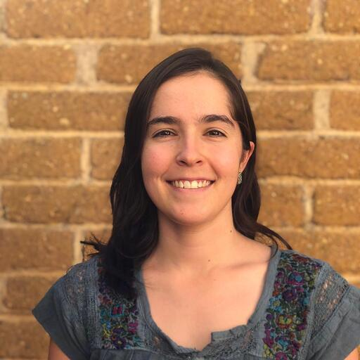
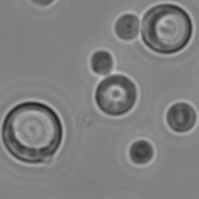

I studied computer science at Columbia Engineering and previously worked at the Broad Institute’s Genomic Center for Infectious Diseases. I am a Ph.D. student in the Computational Biology and Bioinformatics (CBB) program at Duke University. My research focuses on the evolutionary forces shaping pathogenicity and reproductive strategies, with an emphasis on the human fungal pathogen Cryptococcus. I use Bayesian phylogenetic methods and a genomic epidemiology framework to study the emergence of clinically significant traits. I am also an advocate for genomic capacity building in developing countries.
I earned my BSc in Genetics and Biotechnology from Universidad Nacional Mayor de San Marcos and my MSc in Biochemistry and Molecular Biology from Universidad Peruana Cayetano Heredia, both in Peru. In 2024, I began the University Program in Genetics and Genomics at Duke. My research interest focuses on the co-evolution of human pathogens and their hosts, with a particular interest in population genomics, evolution and the genetics of adaptation.
Research Personnel
Debra Murray (Lab manager / Research scientist)
Email: dm125@duke.edu
Debra got her PhD in entomology, studying the systematics of neotropical butterflies. Debra is involved in myriad projects in the Magwene lab, most prominently our ongoing QTL mapping and experimental evolution projects. In addition to her research, Debra is in charge of ordering, lab safety, and generally helping to keep the trains running on time!
Claudia Zirión Martinez (Bioinformatics)
Email: claudia.zirionmartinez@duke.edu

I studied biology at The Faculty of Sciences at UNAM and did a master's in Integrative Biology at LANGEBIO-Cinvestav. I have done research on fungal cell biology, bacterial metagenomics, and pangenomics. I like to develop bioinformatics lessons for The Carpentries Incubator.
Github page: https://github.com/Czirion
Lyana Matonti (Lab tech)
Email: lyana.matonti@duke.edu

Lyana is working on QTL mapping of titanization in Cryptococcus, and is responsible for our CRISPR-based gene editing efforts as part of QTL mapping studies.
Previous Members of the Lab
- Marhiah Montoya (postdoc, 2020-2025) -- co-mentored with John Perfect.
- Thomas Sauters (graduate student, 2017-2023) -- currently postdoc, Vanderbilt University.
- Cullen Roth (graduate student, 2016-2021) -- currently postdoc, Los Alamos National Laboratory.
- Selcan Aydin (postdoc, 2017-2018) -- currently postdoc, Jackson Laboratory. Selcan's webpage.
- Daniel Skelly (postdoc, 2013-2016) -- currently Senior Computational Scientist, Jackson Laboratory. Dan's webpage
- Colin Maxwell (grad student, PhD 2016) -- currently Senior Scientist, Ruby Bio.
- Omur Kayikci (grad student, PhD 2013) -- currently Research Scientist, Duke University.
- David McCandlish (grad student, PhD 2012) -- currently Associate Professor, Cold Spring Harbor Laboratory. Dave's webpage.
- Christopher Davis (grad student, MS 2016)
- Helen Murphy (postdoc) -- currently Associate Professor, Department of Biology, College of William and Mary. Helen's webpage.
- Joshua Granek (postdoc) -- currently Assistant Professor, Department of Biostatistics and Bioinformatics, Duke. Josh's webpage.
- Jeni Reininga (postdoc) -- currently Proposal Development Lead, University of Missouri.
- Ann Rouse (short term postdoc)
- Xianrui Cheng (rotation)
- Rick Dilling (rotation)
- Nick Davis (rotation)
- David Garfield (rotation)
- Justin Guinney (rotation)
- Karthik Jayasurya (rotation)
- Anna Lehmann (rotation)
- Shannon McDermott (rotation)
- Edgar Medina (rotation)
- Ryan Muraglia (rotation)
- Martin Requena (rotation)
- Kriti Sharma (rotation)
- Kayla Wilhoit (rotation)
- Ken Yokoyama (rotation)
- Selcan Tuncay (summer undergrad from Sabanci University,Turkey) -- now a graduate student at Duke (Buchler lab)
- Ritu Jayakrishnan (undergrad honors thesis)
- Rosa Yang (undergrad honors thesis)
- Sandy Ren (undergrad honors thesis)
- Irvin Wang (undergrad honors thesis)
- Howard Chen (undergrad honors thesis) -- currently doing a Clinical residency at UPenn, following completion of med school at Harvard
- Coulter Knapp (undergrad independent study)
- Jay Ramesh (undergrad independent study)
- Lisa Warner (undergrad independent study)
- Tim Goodman (undergrad independent study)
- Michael McLaughlin (undergrad independent study)
- Nick Patrick (summer undergrad) -- MBA at Harvard
- Makesi Sutton (summer undergrad) - med school (Univ. Connecticut)
- Keisha Carlson (summer undergrad) - grad school University of Washington
- Zee Pittman (lab tech)